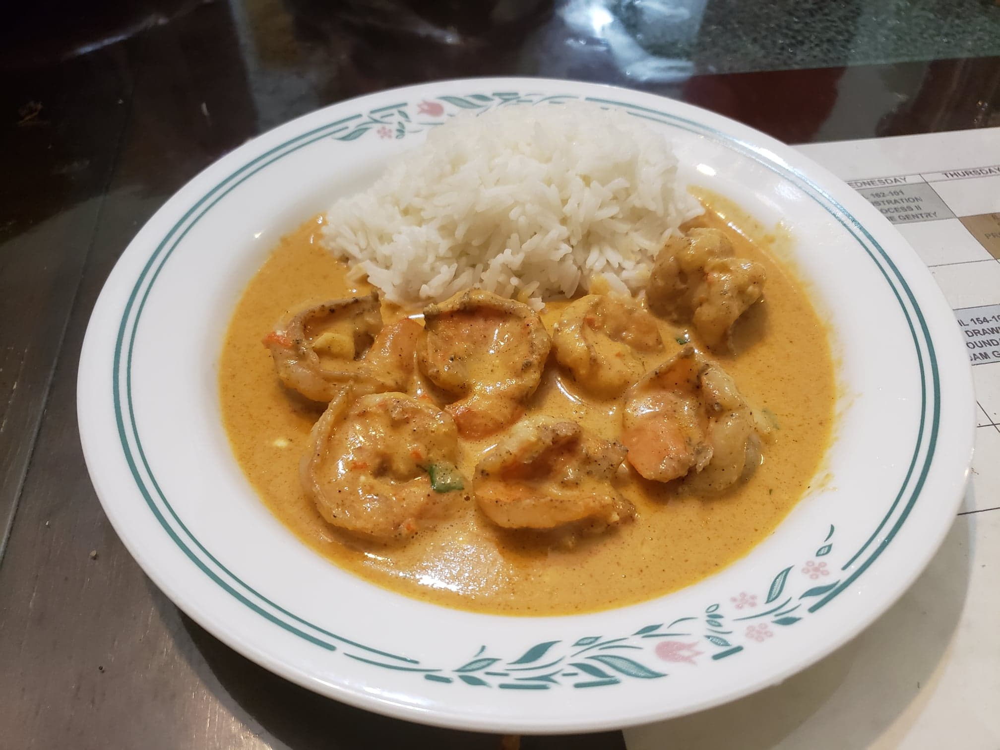

Ensopado de Camarão

Ingredients:
Shrimp:
- 1 1/2 lb Jumbo shrimp, peeled and deveined
- 1 tbsp Vegetable oil
- 1 clove Garlic, minced
- 1/2 tsp Salt
- 1/2 tsp Black pepper
Other Ingredients:
- 4 tbsp Vegetable oil, divided
- 1 small Onion, coarsely chopped
- 1 Red or orange bell pepper, coarsely chopped
- 2 cloves Garlic, coarsely chopped
- 1/2 cup Canned diced tomatoes
- 2 leaves Basil, plus more to garnish
- 2 tbsp chopped Cilantro or Parsley. plus more to garnish
- 1 - 1 3/4 cup (13.5 oz can) Coconut milk
- 1/3 cup Chicken broth or Vegetable broth
- 1 large Lime, juiced
- 1 tsp ground Ginger
- 1 tsp ground Paprika
- 1/2 tsp Salt
- 1/2 tsp Black pepper
- Recommended: 4-6 oz Cream cheese
- Optional: 1 Red jalapeño, thinly sliced
Instructions:
- Combine and toss the shrimp ingredients and let rest while preparing the vegetables.
- Heat 2 tbsp of oil in a large pan. Add the onion and bell pepper and let cook for about 3 minutes.
- Add the 2 coarsely chopped garlic cloves and cook for about 1 minute. Add the canned diced tomatoes, basil, and cilantro/parsley. Let cook for about 2 minutes. Transfer the cooked vegetables to a blender and set aside.
- Add the last 2 tbsp to the pan and cook the shrimp for 2 minutes, then flip and cook for another 1-2 minutes or until it turns pink. Remove from heat.
- Add the coconut milk, chicken/vegetable broth, lime juice, ground ginger, paprika, and the salt and pepper to the cooked, reserved vegetables and blend until vegetables are completely ground and mixture is homogeneous.
- Transfer blended mixture to the skillet and bring to a boil; then reduce to simmer and cook for about 5 minutes. If using, add the cream cheese and stir until melted and the sauce is creamy and homogeneous.
- Add the cooked shrimp to the skillet and toss to coat. Garnish with basil leaves, chopped cilantro/parsley, and slices of red jalapeno pepper if using.